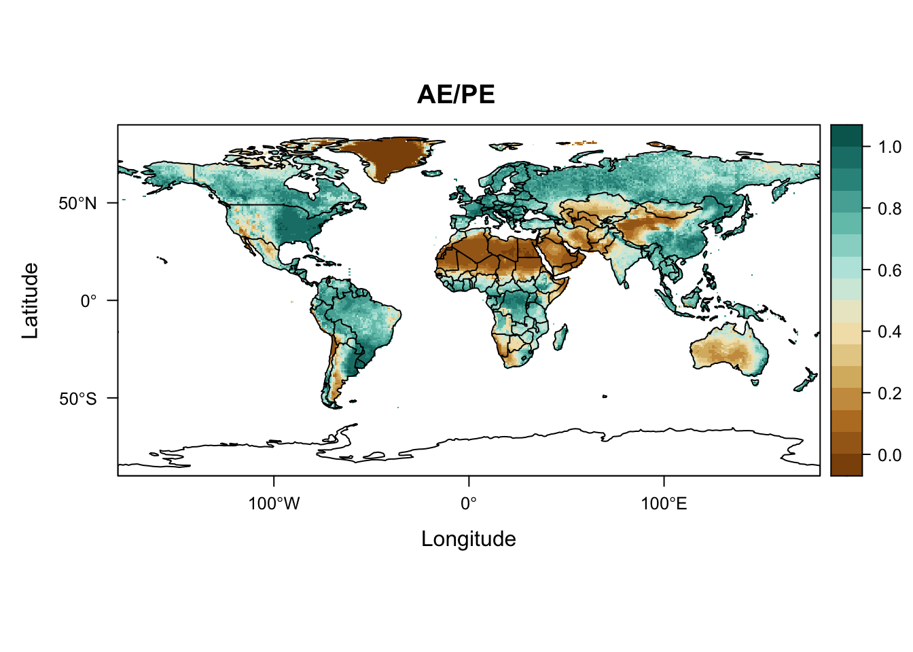

This RMarkdown document describes reading a netCDF file consisting of several bioclimatic variables, and plots one of them alpha
Read a shapefile of world coastlines and countries.
Now read in alpha.
# read alpha (AE/PE)
alpha_path <- "/Users/bartlein/Projects/ESSD//data/nc_files/"
alpha_name <- "cru10min30_bio.nc"
alpha_file <- paste(alpha_path, alpha_name, sep="")
alpha <- raster(alpha_file, varname="mipt")
alpha## class : RasterLayer
## dimensions : 360, 720, 259200 (nrow, ncol, ncell)
## resolution : 0.5, 0.5 (x, y)
## extent : -180, 180, -90, 90 (xmin, xmax, ymin, ymax)
## crs : +proj=longlat +datum=WGS84 +ellps=WGS84 +towgs84=0,0,0
## source : /Users/bartlein/Projects/ESSD/data/nc_files/cru10min30_bio.nc
## names : Priestley.Taylor..alpha..parameter..AE.PE.
## zvar : miptFinally, plot alpha using the levelplot() function from rasterVis:
# rasterVis plot
mapTheme <- rasterTheme(region=brewer.pal(8,"BrBG"))
plt <- levelplot(alpha, margin=F, par.settings=mapTheme, main="AE/PE")
plt + layer(sp.lines(world_outline, col="black", lwd=1.0))